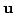
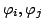
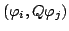
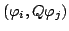

Next: The Stokes equations
Up: Vector-valued problems
Previous: Vector-valued problems
The elastic equations
As first example for the methods we are going to discuss for vector-valued
problems, we consider the elastic Lamé equations for isotropic materials,
which read in strong form:
These equations describe the three-dimensional deformation  of an
elastic body under a body force  . The respective bilinear form
associated with this operator is then
or as a sum over components:
. The respective bilinear form
associated with this operator is then
or as a sum over components:
When assembling matrices, it is advantageous to write the weak form
(i.e. after integration by parts) as a kind of operator. This is since matrix
elements after discretization are defined as
where
 are two vector-valued trial functions, and it
would be nice if we could write the bilinear form
 as a kind
of scalar product
, where
as a kind
of scalar product
, where  is a differential
operator. This is trivial if we take as the operator of the strong form,
is a differential
operator. This is trivial if we take as the operator of the strong form,
 , but we wanted to
do this for the weak form. For this, we introduce some notation that is used
in quantum field theory: for differential operators, we indicate by an arrow
placed atop of it whether it shall act on the object to the left or to the
right of it. Thus,
, but we wanted to
do this for the weak form. For this, we introduce some notation that is used
in quantum field theory: for differential operators, we indicate by an arrow
placed atop of it whether it shall act on the object to the left or to the
right of it. Thus,
 . With this, a simple computation shows
that
. With this, a simple computation shows
that
The sought operator is then
and
 . We demonstrate the fact that
acts to both sides by placing it in the middle of the scalar product, just as
in the bra-ket notation of quantum physics.
. We demonstrate the fact that
acts to both sides by placing it in the middle of the scalar product, just as
in the bra-ket notation of quantum physics.
The advantages of this formulation will become clear when discussing
assembling matrices below. For now, we remark that the symmetry of the weak
form is equally apparent from the form of as well as from the initial
definition of
.
Next: The Stokes equations
Up: Vector-valued problems
Previous: Vector-valued problems
Wolfgang Bangerth
2002-06-14